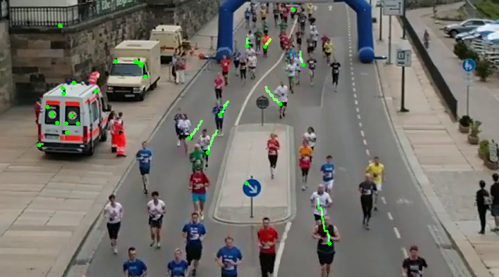
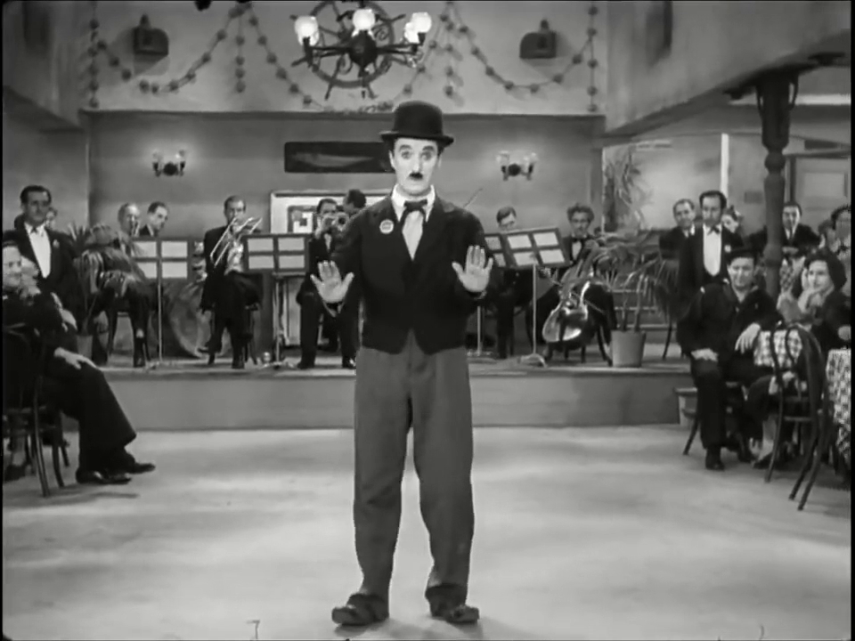
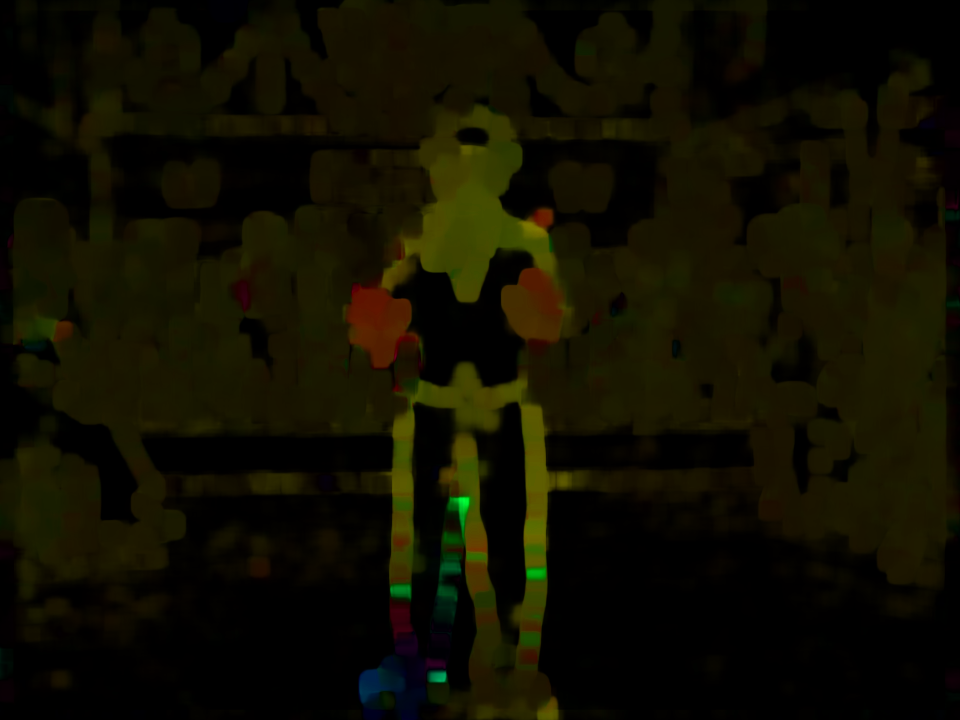
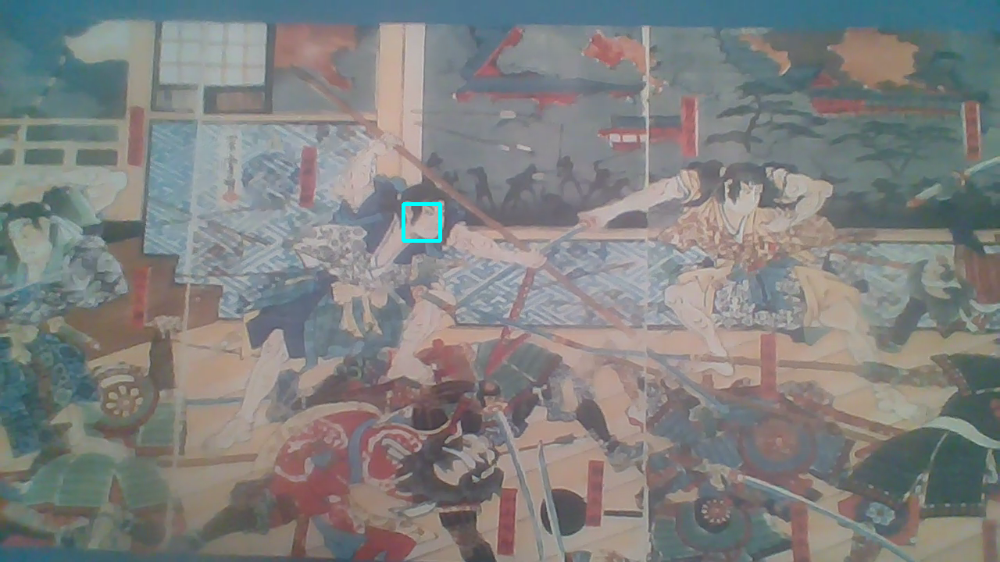
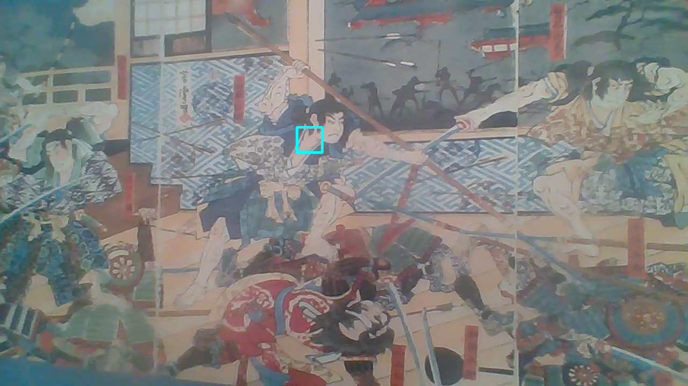

Overview
As artificial intellegence continues to grow and become more sophisticated, one of the areas of study that is becoming more useful everyday is computer vision. Computer vision is an interdisciplinary scientific field that deals with how computers can gain high-level understanding from digital images or videos. From the perspective of engineering, it seeks to understand and automate tasks that the human visual system can do. In this blog I will touch upon a few methods that are commonly used in computer vision.
The process for the computer being able to actually see the images we give to it will not really change as our methods of object tracking may change. Each pixel gets measured by its intensity of color or if the image is black and white, how dark or light each pixel is.
Optical Flow
Optical flow or optic flow is the pattern of apparent motion of objects, surfaces, and edges in a visual scene caused by the relative motion between an observer and a scene. Optical flow can also be defined as the distribution of apparent velocities of movement of brightness pattern in an image. Based on the Shi-tomasi corner detector, this is how the computer finds what to track when being fed an image. Using the Lucas-Kanade method, the computer is able to track the movement of the points detectd from the Shi-tomasi corner detector.
I will include some of my code snips to give you an idea of how it all works. For the full code, you can go to my Github page and check out my jupyter notebooks.
while(cap.isOpened()):
# Read the capture and get the first frame
ret, frame = cap.read()
# Convert all frame to Grayscale (previously we did only the first frame)
gray = cv2.cvtColor(frame,cv2.COLOR_BGR2GRAY)
# Calculate optical flow by Lucas-Kanade
next, status, error = cv2.calcOpticalFlowPyrLK(prev_gray, gray, prev, None, **lk_params)
# Select good feature for the previous position
good_old = prev[status==1]
# Select good feature for the next position
good_new = next[status==1]
# Draw optical flow track
for i , (new,old) in enumerate(zip(good_new, good_old)):
# Return coordinates for the new point
a,b = new.ravel()
# Return coordinates for the old point
c,d = old.ravel()
# Draw line between new and old position
mask = cv2.line(mask, (a,b), (c,d), color, 2)
# Draw filled circle
frame = cv2.circle(frame, (a,b), 3, color, -1)
# Overlay optical flow on original frame
output = cv2.add(frame, mask)
# Update previous frame
prev_gray = gray.copy()
# Update previous good features
prev = good_new.reshape(-1,1,2)
# Open new window and display the output
cv2.imshow('Optical Flow', output)
The end result of this code produces objects selected and tracked frame by frame.
Dense Optical Flow
In the previous section, Lucas-Kanade method computes optical flow for a sparse feature set (corners detected using Shi-Tomasi algorithm). OpenCV provides another algorithm to find the dense optical flow. It computes the optical flow for all the points in the frame. It is based on Gunner Farneback’s algorithm which is explained in “Two-Frame Motion Estimation Based on Polynomial Expansion” by Gunner Farneback in 2003. This finds the magnitude and direction and then color code the results for better visualization. Direction corresponds to Hue value of the image. Magnitude corresponds to Value plane. Below is some of the code specific to dense optical flow.
# Calculate dense optical flow by Farneback
flow = cv2.calcOpticalFlowFarneback(prev_gray, gray, None, 0.5,
3, 15, 3, 5, 1.2, 0)
# Compute Magnitude and Angle
magn, angle = cv2.cartToPolar(flow[..., 0],
flow[..., 1])
# Set image hue depanding on the optical flow direction
mask[..., 0] = angle * 180 / np.pi / 2
# Normalize the magnitude
mask[..., 2] = cv2.normalize(magn, None, 0, 255, cv2.NORM_MINMAX)
See the results below of Charlie Chaplin dancing.
 MeanShift
The intuition behind the meanshift is simple. Consider you have a set of points. (It can be a pixel distribution like histogram backprojection). You are given a small window ( may be a circle) and you have to move that window to the area of maximum pixel density (or maximum number of points). To do this you need to set up an initial tracking window and the region of interest for tracking. Once that region is specified, you need to create a histogram to target on each frame for the meanshift calculation and then normalize it. This is all the setup you need to run the meanshift algorithm. The results look something like this.
 Camshift
The one problem with the meanshift algorithm, is that the tracking window stays the same size. This is not ideal when objects get closer or farther from the camera. This problem can be solved with the CAMshift algorithm. It applies meanshift first. Once meanshift converges, it updates the size of the window. It also calculates the orientation of best fitting ellipse to it. Again it applies the meanshift with new scaled search window and previous window location. The process is continued until required accuracy is met. It is almost same as meanshift, but it returns a rotated rectangle (that is our result) and box parameters (used to be passed as search window in next iteration).
Single Object Tracking
OpenCV has 8 trackers already built into its library which you can choose from to track objects from images or videos. The different types of tracking include BOOSTING Tracker, MIL Tracker, KCF Tracker, CSRT Tracker, MedianFlow Tracker, TLD Tracker, MOSSE Tracker, and GOTURN. Each one of these has its advantages and disadvantages and it is up to the user to figure out which one is best for track the certain objects in their image. For my function I gave users the option to pick which tracking method they wanted to use.
while True:
# Read the capture
ret, frame = cap.read()
# update tracker
success, roi = tracker.update(frame)
# roi -> from tuple to int
(x,y,w,h) = tuple(map(int, roi))
# Draw rects as tracker moves
if success:
# Sucess on tracking
pts1 = (x,y)
pts2 = (x+w, y+h)
cv2.rectangle(frame, pts1, pts2, (255,125,5), 3)
# else
else:
# Failure on tracking
cv2.putText(frame, 'Fail to track the object', (100,200),
cv2.FONT_HERSHEY_SCRIPT_SIMPLEX, 1, (25,125,225), 3)
# Display Tracker
cv2.putText(frame, tracker_name, (20,400),
cv2.FONT_HERSHEY_SCRIPT_SIMPLEX, 1, (255,255,0), 3)
# Display result
cv2.imshow(tracker_name, frame)
Multi-Object Tracking
This takes the algorithm one step further to track multiple objects from a single video at the same time. The code is not too different for this process and only needs a few modifications. After those modifications are done you can select any object in the video you want to track.
# Create multitracker
multitracker = cv2.MultiTracker_create()
# Initialize multitracker
for rect_box in rects:
multitracker.add(tracker_name(tracker_types),
frame,
rect_box)
#Video and Tracker
# while loop
while cap.isOpened():
success, frame = cap.read()
if not success:
break
# update location objects
success, boxes = multitracker.update(frame)
# draw the objectes tracked
for i, newbox in enumerate(boxes):
pts1 = (int(newbox[0]),
int(newbox[1]))
pts2 = (int(newbox[0] + newbox[2]),
int(newbox[1] + newbox[3]))
cv2.rectangle(frame,
pts1,
pts2,
colors[i],
2,
1)
# display frame
cv2.imshow('MultiTracker', frame)
Again these bit of code are not the entire structure and for the full code please visit my Github.
Data and Info Source by Coursera.